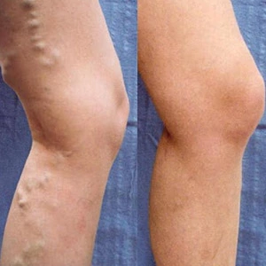
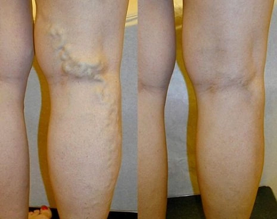
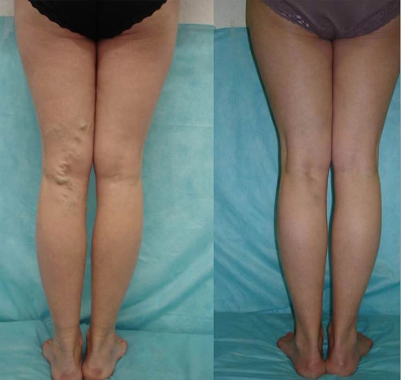

الدوالي عند النساء هي مشكلة خطيرة. ومع ذلك ، يمكن اليوم منع تطورها بسهولة في المنزل.
يتم تشخيص دوالي واضطراب تدفق الدم لدى العديد من النساء في مختلف الأعمار . أخطر ما في هذه المشكلة هو أنها لا تختفي بمرور الوقت: يزداد توسع الأوردة تحت الجلد ، مما يعني أن تورم الأطراف والألم وخطر تجلط الأوعية الدموية يزداد أيضًا.
الخبيرة الروسية إيلينا أناتوليفنا

لماذا الدوالي خطيرة جدا على نصف البشرية؟
- حسنًا ، الحقيقة هي أن الكثيرين لا يدركون حتى انها مشكلة حقيقية ويقللون من عواقبها . يأمل الكثير أن تختفي الدوالي من تلقاء نفسها بمرور الوقت ، لكن الحقيقة هي أنها لا تزول أبدًا. لا يمكن أن تدمر الدوالي حياة الشخص فقط بسبب التورم المستمر ومتلازمة الألم ، ولكن أيضًا لأنها تتطور إلى مشاكل اكبر . بالمناسبة ، كل هذا له أسبابه: الأشخاص الذين يعانون من الدوالي في الأطراف السفلية ، يُلاحظ دائمًا لديهم فرط تصبغ الجلد ، ويسود لون أزرق على الجلد ، وفي الحالات الأكثر تقدمًا تحدث القرحة الغذائية. يلاحظ الأشخاص المحيطون بهؤلاء الناس كل هذه الأعراض عليهم ، مما يؤدي لاحقًا إلى وجود تجمعات دموية . أولئك الذين يعانون من الدوالي عليهم تعديل خزانة ملابسهم لإخفاء المشكلة: يرتدون أحذية فضفاضة وسراويل طويلة وجوارب داكنة.
ومع ذلك ، فإن الخطر الرئيسي لهذه المشكلة هو أن التهاب الوريد الخثاري يتطور على خلفيتها. يؤدي التهاب الوريد الخثاري (التهاب الجدار الداخلي للوريد) إلى تكوين جلطات دموية يمكن أن تسد تجويف الوريد بتكوين تجلط وريدي ، وكذلك تدخل الرئتين من خلال نظام الوريد التناسلي السفلي عن طريق الانفصال. من جدار الأوعية الدموية. في هذه الحالة ، يمكن أن تحدث الجلطات الدموية في الشريان الرئوي ، وهي مضاعفات خطيرة .
إذا لم يتم التخلص من الدوالي ، فسيحدث ارتفاع ضغط الدم الوريدي الديناميكي: عند المشي ، يتوقف الضغط في الجهاز الوريدي عن الانخفاض إلى الأعداد اللازمة لضمان ضح الدم الطبيعي عبر الأنسجة. يحدث القصور الوريدي المزمن. في البداية ، تظهر الوزمة ، ثم تخترق خلايا الدم (كرات الدم الحمراء ، الكرات البيضاء ) مع السوائل الأنسجة تحت الجلد. يتطور التصلب الجلدي الشحمي وفرط التصبغ. مع الحفاظ اللاحق وتعميق اضطرابات دوران الأوعية الدقيقة وركود الدم ، تموت خلايا الجلد وتحدث القرحة الغذائية. وهذا يعني بالفعل الإعاقة.
في الواقع ، الأشخاص الذين يحاولون التخلص من الدوالي بأنفسهم (أو الذين لا يقاومونها على الإطلاق) يعيشون مع قنبلة موقوتة. أنا بصراحة لا أفهم لماذا يفعلون ذلك. يوجد الآن طرق فعالة جدًا للتخلص من الدوالي. في غضون أسابيع ، من الممكن أن تنسى هذه المشكلة إلى الأبد.
- هل تتحدث عن طرق جراحية؟
- بالطبع لا. علاوة على ذلك ، أنا لا أنصح أحد بتلك العمليات. بما في ذلك استخدام الليزر. فإن لهذه العمليات العديد من الآثار السلبية على صحة المرأة ، حيث يمكن أن تؤدي إلى جلطة دموية. لكن العيب الرئيسي للتدخل الجراحي هو أنه مجرد إزالة جمالية للمشكلة ، أي عواقب المشكلة وليس سببها .
منذ أن تبقى السبب، فإن المشكلة سوف تظهر مرة أخرى في المستقبل. وبسرعة كبيرة ، في غضون 1-2 سنوات.
إذا كنت تريد التخلص من الدوالي بشكل نهائي ، فعليك القضاء على السبب. تعتبر آلية التحفيز في تطور الدوالي بمثابة اضطراب في الأداء الطبيعي للصمامات الوريدية مع ظهور تدفق عكسي (ارتداد) للدم.
- بماذا تنصح كيف نتخلص من الدوالي بطريقة أمنة و طبيعية ؟
- على سبيل المثال ، منتج جيد جدًا يمكنه القضاء على الدوالي تقدمًا هو CARDIOFORT ، الذي تم تطويره خصيصاً لهذا السبب نظرًا لأن هذا المنتج مصمم للاستخدام المنزلي ، فهو رخيص جدًا مقارنة بالمنتجات الكيميائية الضارة الاخرى ، وهو مفيد حقًا!
- هل يمكنك إعطاء بعض الأمثلة الملموسة لأشخاص تخلصوا من الدوالي عن طريق المنتج؟
- نعم بالطبع. يمكنني إحصاء العديد من الحالات ، لكنني سأركز على الحالات التي تُظهر معظم فوائد المكمل الغذائي CARDIOFORT :
تظهر الصور بوضوح أن CARDIOFORT لا يخفي الأعراض فحسب ، بل يؤدي أيضًا إلى عمليات تجديد الدوالي. نتيجة لذلك ، يتم ضح الدم في الأوردة بالكامل.
- هل CARDIOFORT جل أم حبوب؟
- وهو مكمل غذائي في شكل كبسولات يساعد على توقف نمو الدوالي ويعيد ترميم الأوردة بفضل تركيبة الخاصة. CARDIOFORT هو تطور فريد من نوعه حصل على رضا كل من إستخدمه
أيضًا ، إنه ليس دواءً بل هو مكمل غذائي ، و هو منتج طبيعي تمامًا يستبعد تفاعل الحساسية والمشاكل الأخرى التي قد تنشأ أثناء فترة إستخدامه .
- إذا لم يباع CARDIOFORT في الصيدليات فكيف يمكن الحصول عليه؟
- الأمر بسيط للغاية ، يمكنك الحصول على المكمل الغذائي CARDIOFORT عن طريق طلبه من خلال النموذج الرسمي للطلب بالأسفل .
بالمناسبة اود ان اقول ان الشركة المصنعة للمنتج الأن لديها تخفيض بنسبة 50% لجميع سكان الجزائر عند شراء دورة CARDIOFORT
بعض مميزات المكمل الغذائي CARDIOFORT :
- تخفيف الآلام
- تقليل انتفاخ الساق .
- تقليل الثقل والانزعاج في الرجلين
- توسيع الاوردة .
- التخلص من الدوالي .
- القضاء على فرط التصبغ .
- ربما تريد أن تقول شيئًا لقرائنا قبل أن ننهي المقابلة؟
- الشيء الوحيد الذي أريد أن أقوله هو أنك لست في عجلة من أمرك
، اعتني بصحتك. قد لا تشك حتى في أنه لديك دوالي. تبداأ
هذه
المشكلة بشكل غير واضح تمامًا: يظهر ثقل وإرهاق في الساقين ، وينشأ
التورم
بعد مجهود كبير ، وتتطور شبكات الأوعية الدموية - ويمكن متابعة هذه
القائمة. نتيجة لذلك ، لن يلاحظوا حتى كيف يعانون من مشاكل صحية
عديدة.
و بالنهاية أنا شخصياً أنصح الجميع بهذا المنتج .شكراً لكم
خصم 50%
تنتهي صلاحية العرض بعد

عند شرائك دورة CARDIOFORT
عائشة
بعد ما رزقت بإبني بدأت مشاكـل رجلي. مش بس كانت بتحرقتي بإستمرار لكن عروقي بدأت "تظهر بشكل سيء من الخارج ". رجلي كانت مغطاه بهذه الدوالي . كانت شكلها بشـع. نصحني زوجي ان استخدم هذا المنتج للتخلص من الدوالي. رأيت أول تأثير في خلال أيام من إستخدام CardioFort . في خلال فترة قصيرة كانت العروق شكلها طبيعي تقريبا و اختفت. وبعد ذلك لاحظـت ان الوجع أيضاً إختفى. رجلي لم تعد تشعر بالثقل ولا تتنفخ تقريبًا. سوف اكمل دورة CardioFort بكل تأكيد و أنصح به الجميع !

سناء
الدوالي هي مشكلتي الأبدية! منذ حوالي 10 سنين لم أكن أستطيع أن اتحـرك بدون مسكنات الألم .من بين كل الأشياء التي جربتها ، المكمل الغذائي CARDIOFORT هو أحـسن منتج بالفعل للتخلص من الدوالي ليس فقط إستخدامه سهل وسريع الامتصاص، ولكنه يساعد أيضاً على إخفاء الدوالي و هذا بالنسبة لي مذهل ! ! أيضاً اريد ان اؤكد ان هذا المنتج يعطيك الشعور بالنشاط بالساقين و لا تشعر بالثقل .
فاطمة
أستخدمه منذ أسبوعين. لكي أكون صادقاً، لم أكن اتوقع مثل هذه النتائج المذهلة.

جميلة
كنت في المرحلة المتقدمة من الدوالي وكانت عروقي واضحة جدًا وجلدي جاف. كان الورم والوجع شبه ثابتين. حتى إشترت لي إبنتي هذا المنتج ، و مع ذلك كنت يائسة . استخدمته لفترة يوميًا . والنتيجة فاجأتني. أول شيء لاحظت ان - الساقين اصبحا اكثر نشاطاً . و بعد ذلك بدأ يختفي الوجع تدريجياً . وبعد عدة أسابيع من الاستخدام، بدأت العقد الوريدية تقل. مازلت أستخدم هذا المنتج حتى الأن ، لأنني بكل بساطة أرى النتائج أمام عيني بالفعل !
.jpg)
الميرا
سوف اطلبه الأن .
حنان
أستخدمه حتى الأن منذ اسبوعين و النتائج فوق ما توقعت!

 جوليا
جوليا
مرحباً. طلبت هذا المنتج لزوجي . لا يمكنني أن أنطق بأي كلمة. النتائج تتحدث عن نفسها و بصراحة منتج مذهل !
.jpg)
خديجة
أستخدمه منذ أسبوع. وأشعر بالرضا حيال النتائج ))
لطيفه
اشتريت هذا المُنتج وأشعر أنه يناسبني. كنت أعاني من مشاكل الدوالي من قبل، لم يكن المظهر جيداً جداً لانه كان مقرفاً نظراً لبروز الدوالي و لكن الآن، تغير كل شيء للأفضل شكراً لكم .
.jpg)
 شيماء
شيماء
أعرف بشأن CARDIOFORT لكنني اشتريته عندما كنت في رحلة عمل منذ فترة طويلة. كان مفيداً للغاية. أنصح الجميع بإستعماله .
.jpg)
نادية
إنه منتج مفيد. طلبته عن طريق ملئ النموذج الرسمي للطلب بالموقع الرسمي دون أن أدفع الثمن مُقدماً. سأستلم الطرد في غضون أيام.
لينا
أنا سعيدة للغاية. والآن أشعر بشعور رائع بعدما تخلصت من الدوالي بفضل CARDIOFORT
 رجاء
رجاء
شكراً لكم كثيراً على هذا المنتج أنا إستخدمته و النتائج كانت أكثر من رائعة
 عارفة
عارفة
صدق أو لا تصدق ، ولكن كان لدي نفس المشكلة ، كانت ساقاي متورمتان باستمرار ، وظهرت تلك "النجوم" ، كنت يائسًا بالفعل ، لكن لحسن الحظ اكتشفت CARDIOFORT ، إنه منتج معجزة ، أنصح به الجميع
رجاء
لقد طلبت أيضًا CARDIOFORT منذ بضعة أيام ، لا شيء معقد على الإطلاق. وصل عن طريق عامل الوصيل بعد يوم واحد. لقد بدأت للتو في استخدامه ، وسأكتب عن النتائج لاحقًا. شكرا!
 حنان
حنان
إذا لم يكن ذلك مناسبًا لك ، فلن أجد هذا المنتج مطلقًا. وربما مات بعد ذلك بعامين. يجب أن يكونوا قد رأوا الأوردة التي كانت لدي قبل استخدام هذا الكريم.
مريم
النتيجة فاقت توقعاتي. استغرقت دورة الإستخدام بأكملها شهرًا واحدًا ، والآن أصبح كل شيء رائعًا! بدأت ساقاي تبدو كما كانت من قبل.
زينة
أستخدم CARDIOFORT لمدة أسبوعين. أشعر بخفة في ساقي. قبل ذلك سارت مثل امرأة عجوز نصف ميتة. كانت ساقاي متورمتين باستمرار وتتألمان. أيضا ، لم تكن تبدو جيدة جدا بسبب الدوالي. هذا المنتج ممتاز!
انتصار
قرأت المقال وقررت أن أطلبه على الفور. إنهم لا يعرفون عدد الأشياء التي جربتها ، وظلت الدوالي كما هي.
ايمان
أيها الناس ، من أين اشتريتم المنتج ؟ الصيدليات لا تبيع هذا المنتج ، وأخشى شرائه عبر الإنترنت.
تعليقات